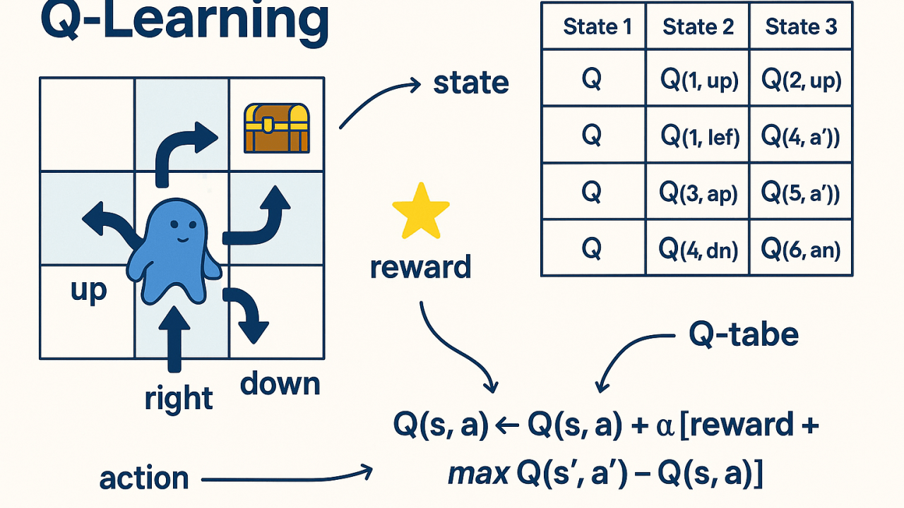
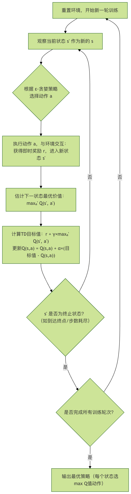
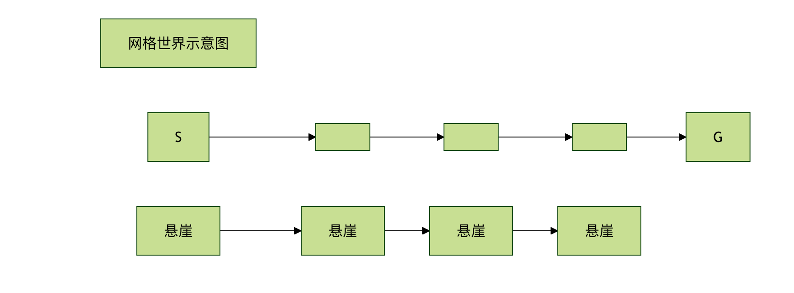

強化学習 Q-learning と SARSA
人工知能の分野において、強化学習は、エージェントが環境との相互作用を通じて目標を達成する方法を学習する手法です。
子犬に新しい指示を教えることを想像してみてください。子犬が行動（座るなど）をすると、あなたは報酬（おやつ）を与えます。子犬は指示を聞いたときに正しい反応をすることを徐々に学習します。Q-learning と SARSA は、強化学習における古典的で極めて重要な2つのアルゴリズムであり、エージェントがどの状態でどの行動が最善かを学習するための中核ツールです。本記事では、これら2つのアルゴリズムの原理、違い、実装を明確に解説します。
強化学習とマルコフ決定過程の基礎
Q-learning と SARSA の詳細に入る前に、それらが共通して基づく理論的枠組みを理解する必要があります。
中核概念
強化学習問題は通常、次のようにモデル化されます。マルコフ決定過程。これには以下の重要な要素が含まれます：
- エージェント：意思決定と学習を行う主体。
- 環境：エージェントが相互作用する外部世界。
- 状態：特定の時点における環境の記述。
- 行動：エージェントが特定の状態で実行できる操作。
- 報酬：エージェントが行動を実行した後に環境が返す即時の報酬シグナル。
- 方策：エージェントが与えられた状態で行動を選択する規則であり、学習の目標です。
目標と価値関数
エージェントの究極の目標は、単なる即時報酬ではなく、長期的な累積報酬を最大化することです。そのために、次のものを導入します。価値関数。
- 状態価値関数 V(s)：状態
sから始めて、特定の方策に従ったときに得られる期待累積報酬を表します。 - 行動価値関数 Q(s, a)：状態
sで行動aを実行し、その後特定の方策に従ったときに得られる期待累積報酬を表します。Q-learning と SARSA の中核は、この Q 関数を学習することです。
即時報酬と将来報酬のバランスを取るために、割引率 γ（通常は [0, 1] の範囲を取ります）。将来の k ステップ目の報酬には γ^k が掛けられます。これは、エージェントがより最近の報酬を重視することを意味します。
Q-learning：オフポリシーの時間差学習
Q-learning は、オフポリシーアルゴリズムであり、1989 年に Watkins によって提案されました。その中核的な考え方は、エージェントが最適な Q 値テーブルを学習することで、間接的に最適方策を見つけるというものです。
アルゴリズムの中核：Q値の更新式
Q-learning の学習プロセスは、次の式によって駆動されます：Q(s_t, a_t) ← Q(s_t, a_t) + α * [ r_{t+1} + γ * max_{a} Q(s_{t+1}, a) - Q(s_t, a_t) ]
この式を分解してみましょう：
Q(s_t, a_t)：時刻t、状態s_tで行動a_tを取ったときの現在の推定値。α： 学習率は、新しい情報が古い情報を上書きする程度を制御します（0 < α ≤ 1）。r_{t+1}：行動a_tを実行した後に得られる即時報酬。γ： 割引率は、将来の報酬の重要性を測ります。max_{a} Q(s_{t+1}, a)：次の状態s_{t+1}における、全ての可能な行動の中での最大 Q 値。これは現在の Q テーブルに基づいて推定される、将来得られる可能性のある最良の利益を表します。[ r_{t+1} + γ * max_{a} Q(s_{t+1}, a) - Q(s_t, a_t) ]：時間差誤差。これは「目標値」（即時報酬と将来の最良推定値の和）と「現在の推定値」との差です。アルゴリズムはこの誤差を小さくすることで Q 値を更新します。
オフポリシーの意味
Q-learning がオフポリシーと呼ばれるのは、Q 値を更新する際に、将来の価値を評価するための行動（max_{a} Q(s_{t+1}, a)）と、エージェントが実際に探索として実行する行動が分離されているからです。。
- 行動方策：実際に実行する行動を選択するための方策（例：ε-greedy。一定確率でランダムに探索する）。
- 目標方策：Q 値を更新するための方策であり、完全に貪欲な方策（常に現在の Q 値が最大の行動を選択する）です。
この分離により、Q-learning は現在ランダムな探索を行っている場合でも、最適経路に関する推定を大胆に利用して学習することができます。

アルゴリズムの流れ

SARSA：オンポリシーの時間差学習
SARSA という名前は、その更新プロセスが関与する状態-行動の系列に由来します：(S_t, A_t, R_{t+1}, S_{t+1}, A_{t+1})。これは、オンポリシーアルゴリズムです。
アルゴリズムの中核：Q値の更新式
SARSA の更新式は Q-learning と非常によく似ていますが、1つの重要な違いがあります：Q(s_t, a_t) ← Q(s_t, a_t) + α * [ r_{t+1} + γ * Q(s_{t+1}, a_{t+1}) - Q(s_t, a_t) ]
第2部分に注目してください：
- Q-learning は：
γ * max_{a} Q(s_{t+1}, a) - SARSA は：
γ * Q(s_{t+1}, a_{t+1})
SARSA では、将来の価値を推定するために使用するのは、エージェントが次の状態s_{t+1}で実際に実行する予定の行動a_{t+1}の Q 値です。
オンポリシーの意味
SARSA がオンポリシーと呼ばれるのは、Q 値を更新するための方策（目標方策）と行動を選択するための方策（行動方策）が同じものであるからです。通常はどちらも ε-greedy 方策です。
- それが評価し最適化するのは、現在実行している方策です。
- それが学習するのは、将来の探索リスクを考慮した上での方策であるため、通常より「保守的」です。
Q-learning と SARSA の比較
両者の違いを理解することが、これらを習得する鍵です。以下の表は、中核的な違いを明確にまとめています：
| 特徴 | Q-learning | SARSA |
|---|---|---|
| 方策の種類 | オフポリシー | オンポリシー |
| 更新対象 | 最適な行動に基づく：r + γ * max Q(s', a') |
実際の行動に基づく：r + γ * Q(s', a_{t+1}) |
| 学習目標 | 学習するのは最適方策の Q 関数 | 学習するのは実行方策（例：ε-greedy）の Q 関数 |
| リスク傾向 | より「大胆」。将来は最適な行動を取ると仮定する | より「保守的」。将来の探索によって生じる可能性のあるリスクを考慮する |
| 更新のタイミング | 在 (s, a, r, s')の後すぐに更新できる |
必要(s, a, r, s', a')5つ組（s,a,r,s',a'）が揃って初めて更新できる |
| 典型的な応用 | 離散環境、グローバルな最適解を求める場合 | 安全性への要求が高く、危険な状態を避ける必要がある環境 |
古典的な崖歩き問題の例
この例は、両者の違いを如実に示しています。グリッド世界を想定します。エージェントは開始点 S から終点 G まで移動します。下は崖であり、落ちると大きな負の報酬を受けて開始点に戻されます。

- Q-learning：将来は常に最適（最も安全な）経路を進むと仮定するため、崖に沿った最短経路（経路1）をすぐに学習します。自分は落ちないと「信じている」からです。
- SARSA：将来も ε の確率でランダムに探索する可能性があり、崖から落ちるかもしれないことを考慮しています。そのため、より上側の安全な経路（経路2）を学習します。これは長いですが、長期的な期待報酬はより高くなります。
結論：探索と利用のバランスが必要であり、誤った行動のコストが高い環境では、SARSA は通常、より安全で堅牢な方策を学習できます。
コード実践：Python で Q-learning と SARSA を実装する
シンプルなものを使います4x4グリッドワールドで2つのアルゴリズムをデモンストレーションします。目標はエージェントを左上隅から(0,0)右下隅まで移動させることです(3,3)。
環境設定
例
import random
class GridWorld:
def __init__(self, size=4):
self.size = size
self.state = (0, 0) # 開始点
self.goal = (size-1, size-1) # 終点
self.actions = ['up', 'down', 'left', 'right']
self.action_map = {'up': (-1, 0), 'down': (1, 0), 'left': (0, -1), 'right': (0, 1)}
def reset(self):
"""環境を開始点にリセットする"""
self.state = (0, 0)
return self.state
def step(self, action):
"""アクションを実行し、(次の状態, 報酬, 終了かどうか) を返す"""
move = self.action_map[action]
next_state = (self.state[0] + move[0], self.state[1] + move[1])
# 境界チェック：範囲外の場合はその場に留まる
if not (0 <= next_state[0] < self.size and 0 <= next_state[1] < self.size):
next_state = self.state
self.state = next_state
# 報酬設定：目標到達で報酬10、他の移動は報酬-1（早く到達することを促す）
if next_state == self.goal:
reward = 10
done = True
else:
reward = -1
done = False
return next_state, reward, done
def get_actions(self):
return self.actions
Q-learning アルゴリズムの実装
例
"""
Q-learningアルゴリズムを実装する
env: 環境オブジェクト
episodes: トレーニングエピソード数
alpha: 学習率
gamma: 割引率
epsilon: ε-greedy方策における探索確率
"""
# Qテーブルを初期化、次元は [グリッド行, グリッド列, アクション数]
q_table = np.zeros((env.size, env.size, len(env.actions)))
for episode in range(episodes):
state = env.reset()
done = False
while not done:
# 1. ε-greedy方策でアクションを選択
if random.uniform(0, 1) < epsilon:
action_idx = random.randint(0, len(env.actions)-1) # 探索：ランダムに選択
else:
action_idx = np.argmax(q_table[state[0], state[1], :]) # 活用：Q値が最大のものを選択
action = env.actions[action_idx]
# 2. アクションを実行し、フィードバックを得る
next_state, reward, done = env.step(action)
# 3. Q-learningのコア更新
# 現在の状態とアクションのペアのQ値
current_q = q_table[state[0], state[1], action_idx]
# 次の状態の最大Q値（オフポリシーの鍵）
next_max_q = np.max(q_table[next_state[0], next_state[1], :])
# 目標Q値を計算
target_q = reward + gamma * next_max_q
# Qテーブルを更新
q_table[state[0], state[1], action_idx] = current_q + alpha * (target_q - current_q)
# 次の状態へ移行
state = next_state
return q_table
SARSA アルゴリズムの実装
例
"""
SARSAアルゴリズムを実装する
パラメータの意味はQ-learningと同じ
"""
q_table = np.zeros((env.size, env.size, len(env.actions)))
for episode in range(episodes):
state = env.reset()
done = False
# SARSAは初期状態に対して先にアクションを選択する必要がある
if random.uniform(0, 1) < epsilon:
action_idx = random.randint(0, len(env.actions)-1)
else:
action_idx = np.argmax(q_table[state[0], state[1], :])
action = env.actions[action_idx]
while not done:
# 1. 前のステップで選択したアクションを実行
next_state, reward, done = env.step(action)
# 2. 次の状態のアクションを選択（オンポリシーで、依然としてε-greedyを使用）
if random.uniform(0, 1) < epsilon:
next_action_idx = random.randint(0, len(env.actions)-1)
else:
next_action_idx = np.argmax(q_table[next_state[0], next_state[1], :])
next_action = env.actions[next_action_idx]
# 3. SARSAのコア更新
current_q = q_table[state[0], state[1], action_idx]
# 重要な違い：次の状態で**実際に実行するアクション**のQ値を使用する
next_q = q_table[next_state[0], next_state[1], next_action_idx]
target_q = reward + gamma * next_q
q_table[state[0], state[1], action_idx] = current_q + alpha * (target_q - current_q)
# 4. 次の反復のために状態とアクションを更新
state = next_state
action_idx = next_action_idx
action = next_action
return q_table
テストと方策の可視化
例
"""学習した方策をテストする"""
total_rewards = []
for _ in range(episodes):
state = env.reset()
done = False
total_reward = 0
steps = []
while not done:
# テスト時はグリーディ方策を使用（探索なし）
action_idx = np.argmax(q_table[state[0], state[1], :])
action = env.actions[action_idx]
next_state, reward, done = env.step(action)
steps.append(action[0].upper()) # アクションの頭文字を記録
total_reward += reward
state = next_state
total_rewards.append(total_reward)
print(f"Episode steps: {steps}, Total reward: {total_reward}")
print(f"平均報酬: {np.mean(total_rewards):.2f}")
# 環境を作成
env = GridWorld(size=4)
print("=== Q-learningをトレーニングしてテスト ===")
q_table_ql = q_learning(env, episodes=1000)
test_policy(env, q_table_ql)
print("\n=== SARSAをトレーニングしてテスト ===")
env.reset() # 環境の状態をリセット
q_table_sarsa = sarsa(env, episodes=1000)
test_policy(env, q_table_sarsa)
# 最終的な方策を簡単に比較
print("\n=== 方策の比較（開始点(0,0)から出発するアクション）===)
start_q_values = q_table_ql[0, 0, :]
start_sarsa_values = q_table_sarsa[0, 0, :]
print(f"Q-learning Q値: {dict(zip(env.actions, start_q_values))}")
print(f"推奨アクション: {env.actions[np.argmax(start_q_values)]}")
print(f"SARSA Q値: {dict(zip(env.actions, start_sarsa_values))}")
print(f"推奨アクション: {env.actions[np.argmax(start_sarsa_values)]}")
クリックしてノートを共有
<p style="font-size:14px;">ノートはこの記事の内容の拡張である必要があります！</p><br> <p style="font-size:12px;"><a href="../tougao.html" target="_blank">記事投稿は、ここをクリックしてください</a></p> <p style="font-size:14px;"><a href="../w3cnote/runoob-user-test-intro.html" target="_blank">登録招待コードの取得方法</a></p> <h3 class="text-muted"><i class="fa fa-info-circle" aria-hidden="true"></i> ノートを共有する前に<a href=";.html" class="runoob-pop">ログイン</a>！</h3> <p><a href="../w3cnote/runoob-user-test-intro.html" target="_blank">登録招待コードの取得方法</a></p>